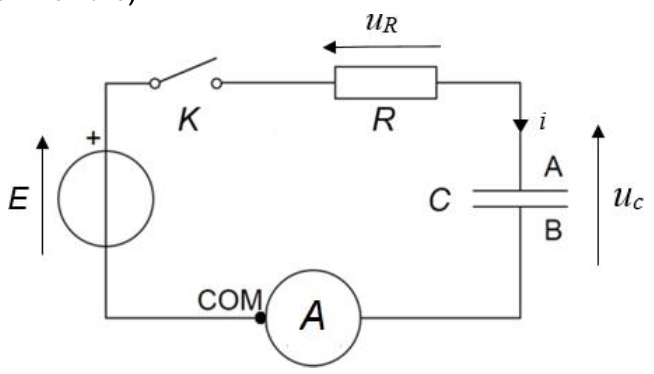
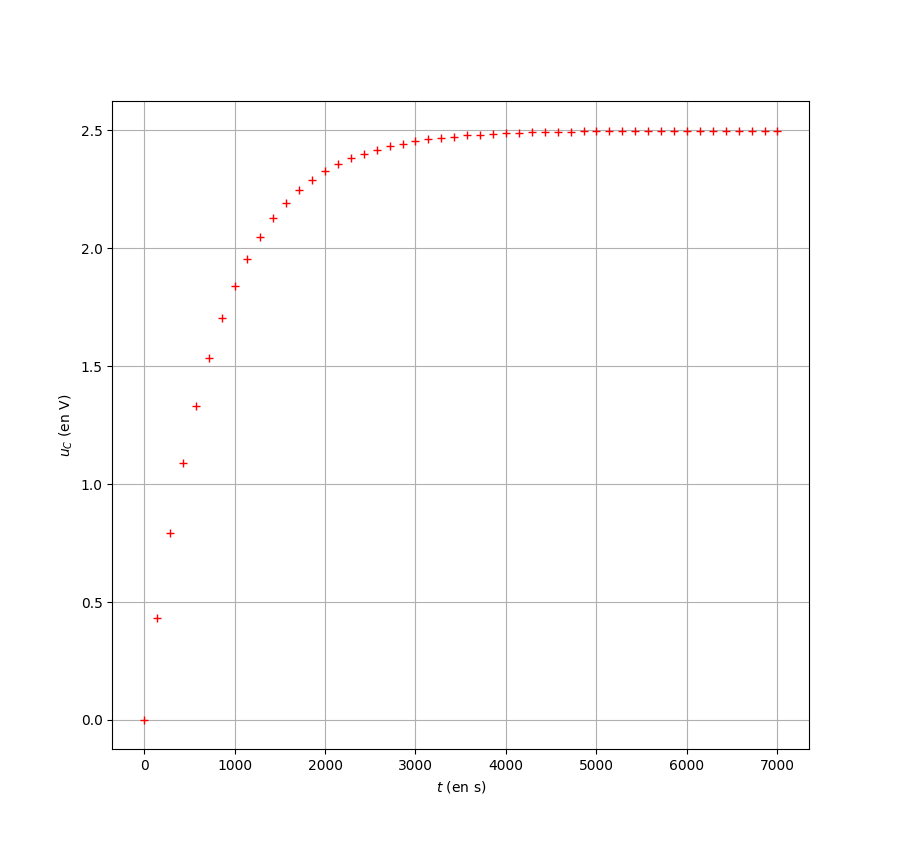
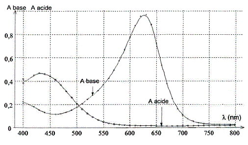
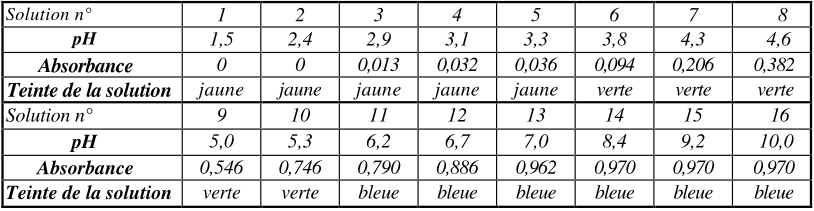
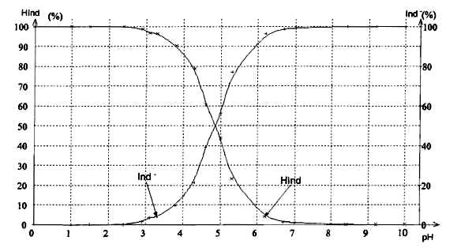

Un supercondensateur permet de stocker et de restituer rapidement de
l’énergie électrique. Dans certains transports en commun, un super
condensateur est utilisé pour emmagasiner un maximum d’énergie
électrique en quelques secondes lors des phases de freinage.
Si des condensateurs classiques étaient utilisée à la place des
supercondensateurs, il faudrait des armatures de très grandes
surfaces et très rapprochées, séparées par un excellent
diélectrique.
Cet exercice a pour objectifs :
de comparer qualitativement un supercondensateur avec un condensateur usuel,
d’étudier le comportement d’un supercondensateur lors de sa charge afin de déterminer expérimentalement la veleur de sa capacité et de la comparer à celle fournie par le fabricant.
Données constructeur pour le supercondensateur étudié :
dimensions : 35 mm \(\times\) 60 mm
capacité : 400 F
tension maximale : 2.5 V
énergie maximale : 0.35 W h
Comparer la valeur de al capacité du supercondensateur étudié aux valeurs usuelles des capacités des condensateurs utilisés au lycée ou en électronique.
La valeur de la capacité \(C\) d’un condensateur plan peut être déterminée à l’aide de la relation : \[C =\epsilon \cdot \dfrac{S}{d}\]
| où | \(S\) est la surface en regard des deux armatures |
| \(d\) est l’écartement entre les deux armatures | |
| \(\epsilon\) est une constante caractéristique eu matériaux isolant placé entre les deux armatures |
Justifier qualitativement les parties soulignées du texte de présentation des superconducteurs.
On souhaite déterminer la valeur de la capacité du supersonducteur en
utilisant un cycle de charge dans un circuit RC. pour cela, on étudie
dans un premier temps le comportement d’un modèle de circuit RC
série.
On considère le circuit électrique schématisé ci-dessous (Figure 1)
composé d’une source idéale de tension \(E\), d’un interrupteur \(K\), d’un conducteur ohmique de résistance
\(R\), du superconducteur de capacité
\(C\) et d’un ampèremètre de résistance
interne négligeable.

Le superconducteur est initialement déchargé. À l’instant \(t=\SI{0}{s}\), on ferme l’interrupteur.
Donner la relation entre l’intensité \(i(t)\) du courant électrique et la dérivée de la charge \(q(t)\) portée par l’armature \(A\) du superconducteur, puis la relation entre l’intensité \(i(t)\), la capacité \(C\) et la dérivée de la tension électrique \(u_C(t)\) aux bornes du supercondensateur.
Montrer que l’équation différentielle dont la tension électrique aux bornes du supercondensateur \(u_C(t)\) est de la forme : \[\dfrac{du_C(t)}{dt} + \frac{1}{\tau}\cdot u_C(t) = \dfrac{E}{\tau}\] Rappeler comment s’exprimer la constante \(\tau\).
Vérifier que les solutions de cette équation différentielle dont de la forme : \[u_C(t) = A \cdot e^{-\frac{t}{\tau}} + E\] Déterminer l’expression de \(A\) pour la situation étudiée.
On réalise le montage précédent avec une source idéale de tension de
valeur \(E = \SI{2,5}{V}\) et un
condensateur ohmique de résiatance \(R=\SI{2,0}{\ohm}\)
À l’aide d’une carte d’acquisition, on réalise le suivi temporel de la
tension aux bornes du supercondensateur durant sa charge (Figure 2).

Déterminer la valeur \(C_1\) de la capacité du supercondensateur en explicitant la démarche suivie.
À l’aide d’un microcontrôleur et d’un programme en python, on peut
reproduire l’expérience un grand nombre de fois pour affiner la
détermination du temps caractéristique du dipôle RC réalisé avec ce même
supercondensateur. Ce programme permet d’obtenir le temps
caractéristique du dipôle RC en déterminant la date pour laquelle le
condensateur est chargé à 63 %.
Après 10 exécutions successives du programme, on obtient, pour le temps
caractéristique du dipôle, la série de valeurs suivante exprimées en
millisecondes :
| 811614 | 818076 | 810301 | 810495 | 818526 | 812067 | 811327 | 813109 | 817838 | 819474 |
|---|
La moyenne \(\bar{\tau_2}\) de la
série de mesures est \(\bar{\tau_2} =
\SI{814,2827}{s}\) .
La calculatrice donne 1.175 s pour le calcul de l’incertitude-type.
Écrire de manière appropriée le résultat de la mesure du temps caractéristique avec son incertitude-type.
On estime que l’incertitude-type de la résistance du conducteur
ohmique est \(u(R) =
\SI{0,1}{\ohm}\).
L’incertitude-type sur la valeur de la capacité \(C_2\) du supercondensateur se déduit des
mesures de la résistance et du temps caractéristique moyen par la
relation suivante : \[u(C_2) = C_2 \cdot
\sqrt{\left(\dfrac{u(R)}{R}\right)^2 +
\left(\dfrac{u(\bar{\tau_2})}{\bar{\tau_2}}\right)^2}\]
Déterminer la valeur de la capacité \(C_2\) du supercondensateur ainsi que son incertitude-type.
Comparer la valeur de la capacité \(C_2\) mesurée expérimentalement avec la valeur de référence \(C_{ref}\) donnée par le constructeur en utilisant le quotient \(\dfrac{|C_2 - C_{ref}|}{u(C_2)}\). Conclure.
Le vert de bromocrésol est un indicateur coloré acido-basique. C’est
un couple acide-base dont l’acide et la base possèdent deux couleurs
différentes : la forme acide est jaune tandis que la forme basique est
bleue.
Le but de cet exercice est de déterminer la valeur de la constante
d’acidité du vert de bromocrésol par deux méthodes différentes.
On dispose d’une solution commerciale \(S\) de vert de bromocrésol à 0.02 % en
solution aqueuse. La concentration molaire en soluté apporté de cette
solution est \(c =\SI{
2,9E-4}{\mole\per\liter}\).
Après avoir étalonné un pH-mètre, on mesure le pH d’un volume \(V=\SI{100,0}{mL}\) de la solution \(S\), on trouve un pH égal à 4,2.
Écrire l’équation de la réaction de l’acide avec l’eau.
Calculer la valeur de l’avancement final \(x_f\) de la réaction entre l’acide et l’eau (on pourra s’aider d’un tableau descriptif de l’évolution du système chimique).
Calculer le taux d’avancement final \(\tau\) de cette réaction. La transformation de l’acide avec l’eau est-elle totale ?
Établir l’expression de la constante d’acidité \(K_A\) de l’indicateur en fonction du pH de la solution et de la concentration molaire en soluté apporté \(c\) de la solution \(S\).
Calculer la valeur de \(K_A\) . En déduire la valeur du \(pK_A\) du vert de bromocrésol.
À l’aide d’un spectrophotomètre, on relève l’absorbance des formes acide et basique du vert de bromocrésol. On obtient les courbes suivantes :

À quelle longueur d’onde \(\lambda\) faut-il régler le spectrophotomètre afin que l’absorbance de la forme acide soit quasiment nulle et celle de la forme basique du vert de bromocrésol soit maximale ?
On utilise seize solutions de volumes identiques mais de pH différents dans lesquelles on ajoute le même volume de la solution commerciale \(S\) de vert de bromocrésol. Après avoir réglé le spectrophotomètre, on mesure l’absorbance de ces seize solutions (résultats voir tableau).

À partir des mesures du tableau précédent, il est possible de calculer les pourcentages de forme acide et de forme basique présentes dans chacune des seize solutions et ainsi de construire le diagramme de distribution des espèces du couple /.

En quel point du diagramme de distribution des espèces a-t-on \([\ce{HInd}] = [\ce{Ind-}]\) ? En déduire la valeur du pKA du vert de bromocrésol.
Tracer le diagramme de prédominance du couple et .
Évaluer, à l’aide du tableau, l’intervalle des valeurs de pH pour lesquelles le vert de bromocrésol prend sa teinte sensible. Comment appelle-t-on cet intervalle ?
On considère que le vert de bromocrésol prend sa teinte acide lorsque \(\dfrac{[\ce{HInd}]}{[\ce{Ind-}]} >10\) et qu’il prend sa teinte basique lorsque \(\dfrac{[\ce{Ind-}]}{[\ce{HInd}]} >10\) .
En utilisant la relation \(pH = pKA + log\left(\dfrac{[base]}{[acide]}\right)\) , déterminer par le calcul l’intervalle de pH pour lequel \([\ce{Hlnd}]\) et \([\ce{Ind-}]\) sont considérées voisines. Comparer cet intervalle à celui évalué précédemment.